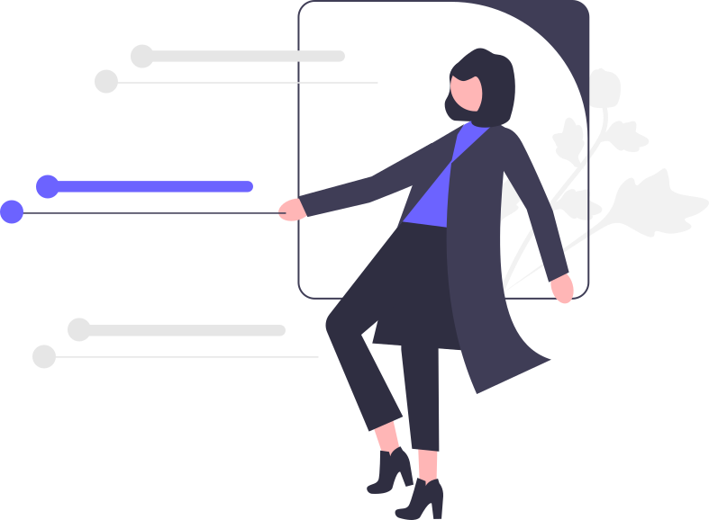

Who we are
Codebridge is a tech and software company in Rwanda committed to enhancing and improving the competitiveness and competence of its clients by enabling them to succeed through the power of information technology security. We have nine years of experience.
service

Our vision, mission & values
We bring clarity to strategy with a stacked system that shows how our mission, vision and values work together in every project.
We combine engineering, research and creative thinking to turn ambitious ideas into scalable digital products for business, HR, and government partners.
To be Rwanda's most trusted technology partner, bridging global best practice with local expertise.
Integrity craftsmanship and continuous learning guide every project we deliver.
Building the future, one step at a time
CodeBridge was founded in January 2018 with a simple mission: bridge the gap between complex technology and real-world business needs. Starting in a small co-working space in Kigali, our founding team of three engineers built their first client project within six months.
We launched our proprietary workflow automation platform, securing our first 50 enterprise clients. This year marked our shift from a service-based shop to a product-driven technology partner.
We expanded into three new markets and were recognized as a "Top Emerging Tech Partner." Our R&D division officially launched, focusing on AI-driven process optimization.
Today, CodeBridge powers over 300+ businesses with secure, scalable and future-ready software solutions. We continue to invest in open-source tools, developer education and sustainable tech practices.
Working with leading institutions that drive digital transformation across Rwanda and Africa.


Know more about Codebridge

We are a distributed team of designers, developers, and strategists united by a love for seamless digital experiences.
HABUMUGISHA Olivier
Olivier is the visionary The Instagram icon is built from three shapes: a rounded square , a circle , and a tiny dot — matching the classic Instagram glyph outline. Olivier is the visionary The Instagram icon is built from three shapes: a rounded square , a circle , and a tiny dot — matching the classic Instagram glyph outline.
MWENZI Teddy
Teddy oversees financial strategy Olivier is the visionary The Instagram icon is built from three shapes: a rounded square , a circle , and a tiny dot — matching the classic Instagram glyph outline. Olivier is the visionary The Instagram icon is built from three shapes: a rounded square , a circle , and a tiny dot — matching the classic Instagram glyph outline.
MWENZI Teddy
Teddy oversees financial strategy Olivier is the visionary The Instagram icon is built from three shapes: a rounded square , a circle , and a tiny dot — matching the classic Instagram glyph outline.Olivier is the visionary The Instagram icon is built from three shapes: a rounded square , a circle , and a tiny dot — matching the classic Instagram glyph outline.
MWENZI Teddy
Teddy oversees financial strategy Olivier is the visionary The Instagram icon is built from three shapes: a rounded square , a circle , and a tiny dot — matching the classic Instagram glyph outline.Olivier is the visionary The Instagram icon is built from three shapes: a rounded square , a circle , and a tiny dot — matching the classic Instagram glyph outline.